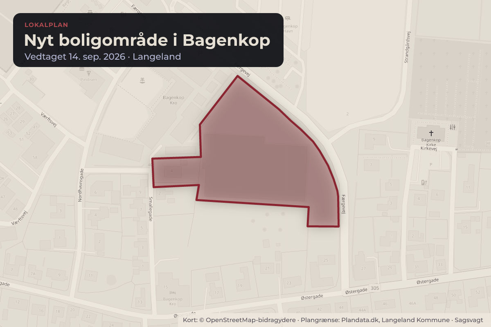
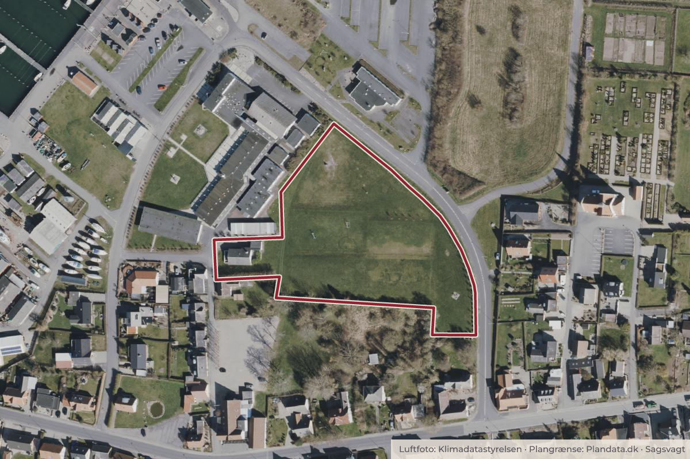

Besluttet 24. august, Teknik- og Havneudvalget, Langeland
Endelig vedtagelse af lokalplan 139 Nyt boligområde i Bagenkop
BoligerByggeri og lokalplanerSkoler og børn

Kort: © OpenStreetMap-bidragydere. Plangrænse: Plandata.dk, Langeland Kommune.

Kort fortalt
- Hvem
- Teknik- og Havneudvalget, Langeland Kommune
- Hvornår
- Mandag 24. august 2026
- Status
- Besluttet. Anbefales.
Er noget forkert her? Skriv til os
Læs hele sagen Kommunens egen tekst
Sagsfremstilling
Efter planlovens § 13, stk. 1, må en lokalplan ikke stride mod kommuneplanen. Lokalplan 139
kan derfor kun vedtages, hvis kommuneplanrammen for området ændres, så den muliggør
boligformål.
Kommuneplantillæg 1 ændrer ramme 11.O.4 til en boligramme, der muliggør åben-lav og tætlav boligbebyggelse på det pågældende areal. Vedtagelse af kommuneplantillæg 1 er således
en forudsætning for vedtagelse af lokalplan 139
Formålet med lokalplanen er:
at fastlægge områdets anvendelse til boligformål (åben-lav og tæt-lav bebyggelse)
at give mulighed for etablering af fælles rekreative områder og fælles parkering
at fastlægge rammer for bebyggelsen
Forslag til lokalplan 139 blev offentliggjort og sendt i otte ugers offentlig høring i perioden 16.
april til den 11. juni sammen med forslag til kommuneplantillæg 1, jf. planlovens § 24, stk. 3.2.
Som led i høringen blev der afholdt borgermøde i Bagenkop den 27. maj 2026 med ca. 70
tilmeldte.
Der er indkommet tre skriftlige høringssvar. Høringssvarene og administrationens
bemærkninger hertil fremgår af vedlagte hvidbog/kommenteret høringsnotat, som omfatter
både kommuneplantillæg 1 og lokalplan 139.
Ændringer efter høring
På baggrund af høringssvarene foreslår administrationen ingen ændringer i lokalplan 139.
Lokalplanen kan derfor vedtages endeligt i den form, den blev sendt i høring.
Da der ikke foretages ændringer, opstår der ikke spørgsmål om fornyet høring efter planlovens
Efter Kommunalbestyrelsens endelige vedtagelse, skal lokalplan 139:
offentligt bekendtgøres i det digitale planregister (Plandata.dk) efter planlovens § 30,
være offentligt tilgængelig, og bekendtgørelsen skal indeholde oplysning om
retsvirkningerne efter planlovens § 18 (forbud mod forhold i strid med lokalplanen) samt
om klageadgang og klagefrist
Fra tidspunktet for offentlig bekendtgørelse gælder lokalplanens retsvirkninger:
ejendomme inden for lokalplanområdet må kun udstykkes, bebygges og anvendes i
overensstemmelse med lokalplanens bestemmelser, jf. planlovens § 18
eksisterende lovlig anvendelse kan fortsætte som hidtil
Klage over lokalplanens endelige vedtagelse kan indgives til Planklagenævnet for så vidt angår
retlige spørgsmål, jf. planlovens § 58, stk. 1, nr. 3. Klagefristen er 4 uger fra offentlig
bekendtgørelse, jf. § 60, stk. 1-2.
Rettidig klage har ikke automatisk opsættende virkning, men Planklagenævnet kan beslutte, at
lokalplanen ikke må udnyttes, jf. § 60 a, stk. 3.
Søgsmål til domstolene til prøvelse af lokalplanen skal anlægges inden 6 måneder efter
bekendtgørelsen, jf. planlovens § 62, stk. 1.
Afledte konsekvenser
Lokalplan 4.11 ophæves for det område, der omfattes af lokalplan 139, ved den offentlige
bekendtgørelse, jf. planlovens § 33, stk. 1 og 6.
Indstilling
Direktionen indstiller, at Teknik- og Havneudvalget over for Økonomiudvalget og
Kommunalbestyrelsen anbefaler, at:
Lokalplan 139 for nyt boligområde i Bagenkop vedtages endeligt, forudsat at
kommuneplantillæg 1 vedtages endeligt
Lokalplan 4.11 ophæves for det område, der omfattes af lokalplan 139, ved den
offentlige bekendtgørelse af den endelige vedtagelse
Hvidbogen tages til efterretning og udsendes til indsigeren som svar på
høringssvar
Beslutning
Anbefales.
Kilde: Langeland Kommune, Teknik- og Havneudvalget, referat fra mødet mandag 24. august 2026, punkt 4. Læs den originale sag hos kommunen.